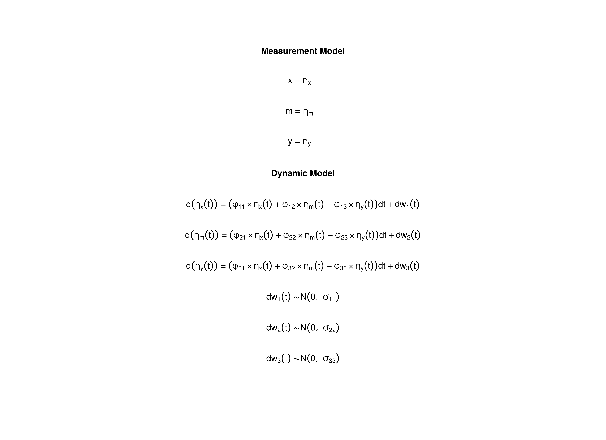

Model
The measurement model is given by \[\begin{equation} \mathbf{y}_{i, t} = \boldsymbol{\nu} + \boldsymbol{\Lambda} \boldsymbol{\eta}_{i, t} + \boldsymbol{\varepsilon}_{i, t}, \quad \mathrm{with} \quad \boldsymbol{\varepsilon}_{i, t} \sim \mathcal{N} \left( \mathbf{0}, \boldsymbol{\Theta} \right) \end{equation}\] where \(\mathbf{y}_{i, t}\), \(\boldsymbol{\eta}_{i, t}\), and \(\boldsymbol{\varepsilon}_{i, t}\) are random variables and \(\boldsymbol{\nu}\), \(\boldsymbol{\Lambda}\), and \(\boldsymbol{\Theta}\) are model parameters. \(\mathbf{y}_{i, t}\) represents a vector of observed random variables, \(\boldsymbol{\eta}_{i, t}\) a vector of latent random variables, and \(\boldsymbol{\varepsilon}_{i, t}\) a vector of random measurement errors, at time \(t\) and individual \(i\). \(\boldsymbol{\nu}\) denotes a vector of intercepts, \(\boldsymbol{\Lambda}\) a matrix of factor loadings, and \(\boldsymbol{\Theta}\) the covariance matrix of \(\boldsymbol{\varepsilon}\).
An alternative representation of the measurement error is given by \[\begin{equation} \boldsymbol{\varepsilon}_{i, t} = \boldsymbol{\Theta}^{\frac{1}{2}} \mathbf{z}_{i, t}, \quad \mathrm{with} \quad \mathbf{z}_{i, t} \sim \mathcal{N} \left( \mathbf{0}, \mathbf{I} \right) \end{equation}\] where \(\mathbf{z}_{i, t}\) is a vector of independent standard normal random variables and \(\left( \boldsymbol{\Theta}^{\frac{1}{2}} \right) \left( \boldsymbol{\Theta}^{\frac{1}{2}} \right)^{\prime} = \boldsymbol{\Theta}\) .
The dynamic structure is given by \[\begin{equation} \mathrm{d} \boldsymbol{\eta}_{i, t} = - \boldsymbol{\Phi} \left( \boldsymbol{\mu} - \boldsymbol{\eta}_{i, t} \right) \mathrm{d}t + \boldsymbol{\Sigma}^{\frac{1}{2}} \mathrm{d} \mathbf{W}_{i, t} \end{equation}\] where \(\boldsymbol{\mu}\) is the long-term mean or equilibrium level, \(- \boldsymbol{\Phi}\) is the rate of mean reversion, determining how quickly the variable returns to its mean, \(\boldsymbol{\Sigma}\) is the matrix of volatility or randomness in the process, and \(\mathrm{d}\boldsymbol{W}\) is a Wiener process or Brownian motion, which represents random fluctuations.
data("deboeck2015phi", package = "cTMed")Model Fitting using the dynr Package
Prepare Data
Before fitting the model, we set a small \(\Delta t\) and insert NAs on rows with missing observations.
data <- dynUtils::InsertNA(
data = deboeck2015,
id = "id",
time = "time",
observed = c("x", "m", "y"),
delta_t = 0.10,
ncores = parallel::detectCores()
)
head(data)
#> id time x m y
#> 1 1 0.0 -0.5315017 0.6983597 2.17007
#> 2 1 0.1 NA NA NA
#> 3 1 0.2 NA NA NA
#> 4 1 0.3 NA NA NA
#> 5 1 0.4 NA NA NA
#> 6 1 0.5 NA NA NAPrepare Initial Condition
dynr_initial <- prep.initial(
values.inistate = rep(x = 0, times = 3),
params.inistate = c("mu0_1", "mu0_2", "mu0_3"),
values.inicov = diag(3),
params.inicov = matrix(
data = c(
"sigma0_11", "sigma0_12", "sigma0_13",
"sigma0_12", "sigma0_22", "sigma0_23",
"sigma0_13", "sigma0_23", "sigma0_33"
),
nrow = 3
)
)Prepare Measurement Model
dynr_measurement <- prep.measurement(
values.load = diag(3),
params.load = matrix(data = "fixed", nrow = 3, ncol = 3),
state.names = c("eta_x", "eta_m", "eta_y"),
obs.names = c("x", "m", "y")
)Prepare Dynamic Process
dynr_dynamics <- prep.formulaDynamics(
formula = list(
eta_x ~ phi_11 * eta_x + phi_12 * eta_m + phi_13 * eta_y,
eta_m ~ phi_21 * eta_x + phi_22 * eta_m + phi_23 * eta_y,
eta_y ~ phi_31 * eta_x + phi_32 * eta_m + phi_33 * eta_y
),
startval = c(
phi_11 = -0.357, phi_12 = 0, phi_13 = 0,
phi_21 = 0.771, phi_22 = -0.511, phi_23 = 0,
phi_31 = -0.450, phi_32 = 0.729, phi_33 = -0.693
),
isContinuousTime = TRUE
)Prepare Process Noise
dynr_noise <- prep.noise(
values.latent = 0.01 * diag(3),
params.latent = matrix(
data = c(
"sigma_11", "sigma_12", "sigma_13",
"sigma_12", "sigma_22", "sigma_23",
"sigma_13", "sigma_23", "sigma_33"
),
nrow = 3
),
values.observed = matrix(data = 0, nrow = 3, ncol = 3),
params.observed = matrix(data = "fixed", nrow = 3, ncol = 3)
)Prepare the Model
model <- dynr.model(
data = dynr_data,
initial = dynr_initial,
measurement = dynr_measurement,
dynamics = dynr_dynamics,
noise = dynr_noise,
outfile = "ou.c"
)Set lower and upper bounds to aid in optimization.
lb <- ub <- rep(NA, times = length(model$xstart))
names(ub) <- names(lb) <- names(model$xstart)
lb[
c(
"phi_11",
"phi_21",
"phi_31",
"phi_12",
"phi_22",
"phi_32",
"phi_13",
"phi_23",
"phi_33"
)
] <- -1.5
ub[
c(
"phi_11",
"phi_21",
"phi_31",
"phi_12",
"phi_22",
"phi_32",
"phi_13",
"phi_23",
"phi_33"
)
] <- 1.5
model$lb <- lb
model$ub <- ub
Fit the Model
dynr_fit <- dynr.cook(
model,
debug_flag = TRUE,
verbose = FALSE
)
#> [1] "Get ready!!!!"
#> using C compiler: ‘gcc (Ubuntu 11.4.0-1ubuntu1~22.04) 11.4.0’
#> Optimization function called.
#> Starting Hessian calculation ...
#> Finished Hessian calculation.
#> Original exit flag: 3
#> Modified exit flag: 3
#> Optimization terminated successfully: ftol_rel or ftol_abs was reached.
#> Original fitted parameters: -0.3537864 0.02461296 -0.01454772 0.7745076
#> -0.4761682 0.01994299 -0.5347597 0.8321049 -0.7859372 -2.119013 -0.4472824
#> 0.2237069 -1.895274 -0.4334241 -1.724992 -0.1065631 -0.384853 0.05342032
#> -0.05236702 0.2034092 0.3107022 0.1075105 0.08245522 -0.2412857
#>
#> Transformed fitted parameters: -0.3537864 0.02461296 -0.01454772 0.7745076
#> -0.4761682 0.01994299 -0.5347597 0.8321049 -0.7859372 0.1201502 -0.05374106
#> 0.02687843 0.1743146 -0.07715598 0.2124178 -0.1065631 -0.384853 0.05342032
#> 0.9489805 0.1930314 0.2948503 1.152767 0.1517894 0.8847984
#>
#> Doing end processing
#> Successful trial
#> Total Time: 1.540131
#> Backend Time: 1.532238Summary
summary(dynr_fit)
#> Coefficients:
#> Estimate Std. Error t value ci.lower ci.upper Pr(>|t|)
#> phi_11 -0.353786 0.052003 -6.803 -0.455710 -0.251863 <2e-16 ***
#> phi_12 0.024613 0.045599 0.540 -0.064760 0.113986 0.2947
#> phi_13 -0.014548 0.045388 -0.321 -0.103507 0.074411 0.3743
#> phi_21 0.774508 0.066547 11.639 0.644079 0.904936 <2e-16 ***
#> phi_22 -0.476168 0.058532 -8.135 -0.590890 -0.361447 <2e-16 ***
#> phi_23 0.019943 0.057695 0.346 -0.093137 0.133023 0.3648
#> phi_31 -0.534760 0.080017 -6.683 -0.691589 -0.377930 <2e-16 ***
#> phi_32 0.832105 0.070598 11.787 0.693736 0.970474 <2e-16 ***
#> phi_33 -0.785937 0.068748 -11.432 -0.920680 -0.651194 <2e-16 ***
#> sigma_11 0.120150 0.011570 10.385 0.097474 0.142826 <2e-16 ***
#> sigma_12 -0.053741 0.011312 -4.751 -0.075913 -0.031569 <2e-16 ***
#> sigma_13 0.026878 0.012049 2.231 0.003262 0.050495 0.0129 *
#> sigma_22 0.174315 0.018047 9.659 0.138942 0.209687 <2e-16 ***
#> sigma_23 -0.077156 0.016072 -4.801 -0.108657 -0.045655 <2e-16 ***
#> sigma_33 0.212418 0.022111 9.607 0.169082 0.255754 <2e-16 ***
#> mu0_1 -0.106563 0.137768 -0.773 -0.376584 0.163458 0.2196
#> mu0_2 -0.384853 0.151837 -2.535 -0.682448 -0.087258 0.0057 **
#> mu0_3 0.053420 0.133026 0.402 -0.207305 0.314146 0.3440
#> sigma0_11 0.948981 0.189785 5.000 0.577009 1.320952 <2e-16 ***
#> sigma0_12 0.193031 0.150412 1.283 -0.101770 0.487833 0.0997 .
#> sigma0_13 0.294850 0.136129 2.166 0.028042 0.561658 0.0152 *
#> sigma0_22 1.152767 0.230542 5.000 0.700914 1.604620 <2e-16 ***
#> sigma0_23 0.151789 0.144424 1.051 -0.131277 0.434856 0.1467
#> sigma0_33 0.884798 0.176952 5.000 0.537980 1.231617 <2e-16 ***
#> ---
#> Signif. codes: 0 '***' 0.001 '**' 0.01 '*' 0.05 '.' 0.1 ' ' 1
#>
#> -2 log-likelihood value at convergence = 849.23
#> AIC = 897.23
#> BIC = 1041.78
parnames <- c(
"phi_11",
"phi_21",
"phi_31",
"phi_12",
"phi_22",
"phi_32",
"phi_13",
"phi_23",
"phi_33"
)
phi_vec <- coef(dynr_fit)[parnames]
phi <- matrix(
data = phi_vec,
nrow = 3
)
colnames(phi) <- rownames(phi) <- c("x", "m", "y")
vcov_phi_vec <- vcov(dynr_fit)[parnames, parnames]
dynr <- list(
phi = phi,
vcov = vcov_phi_vec
)Model Fitting using the ctsem Package
Define the Model
model <- ctModel(
type = "stanct",
manifestNames = c("x", "m", "y"),
latentNames = c("eta_x", "eta_m", "eta_y"),
id = "id",
time = "time",
silent = TRUE,
LAMBDA = diag(3),
DRIFT = "auto",
MANIFESTMEANS = matrix(data = 0, nrow = 3, ncol = 1),
MANIFESTVAR = diag(0, 3),
CINT = "auto",
DIFFUSION = "auto"
)Fit the Model
set.seed(42)
ctsem_fit <- ctStanFit(
datalong = data,
ctstanmodel = model,
optimize = TRUE,
cores = parallel::detectCores()
)Summary
summary(ctsem_fit)
#> $residCovStd
#> x m y
#> x 0.534 0.038 0.077
#> m 0.038 0.319 0.023
#> y 0.077 0.023 0.374
#>
#> $resiCovStdNote
#> [1] "Standardised covariance of residuals"
#>
#> $rawpopcorr
#> mean sd 2.5% 50% 97.5% z
#> T0m_eta_m__T0m_eta_x 0.1769 0.1390 -0.1004 0.1812 0.4235 1.2728
#> T0m_eta_y__T0m_eta_x 0.3104 0.1252 0.0472 0.3133 0.5396 2.4804
#> T0m_eta_y__T0m_eta_m 0.1412 0.1348 -0.1214 0.1409 0.4063 1.0471
#>
#> $parmatrices
#> matrix row col Mean sd 2.5% 50% 97.5%
#> 1 T0MEANS 1 1 -0.1024 0.1347 -0.3603 -0.1022 0.1619
#> 2 T0MEANS 2 1 -0.3784 0.1547 -0.6869 -0.3742 -0.0738
#> 3 T0MEANS 3 1 0.0544 0.1330 -0.2036 0.0531 0.3193
#> 4 LAMBDA 1 1 1.0000 0.0000 1.0000 1.0000 1.0000
#> 5 LAMBDA 1 2 0.0000 0.0000 0.0000 0.0000 0.0000
#> 6 LAMBDA 1 3 0.0000 0.0000 0.0000 0.0000 0.0000
#> 7 LAMBDA 2 1 0.0000 0.0000 0.0000 0.0000 0.0000
#> 8 LAMBDA 2 2 1.0000 0.0000 1.0000 1.0000 1.0000
#> 9 LAMBDA 2 3 0.0000 0.0000 0.0000 0.0000 0.0000
#> 10 LAMBDA 3 1 0.0000 0.0000 0.0000 0.0000 0.0000
#> 11 LAMBDA 3 2 0.0000 0.0000 0.0000 0.0000 0.0000
#> 12 LAMBDA 3 3 1.0000 0.0000 1.0000 1.0000 1.0000
#> 13 DRIFT 1 1 -0.3560 0.0522 -0.4659 -0.3521 -0.2670
#> 14 DRIFT 1 2 0.0226 0.0454 -0.0610 0.0229 0.1144
#> 15 DRIFT 1 3 -0.0134 0.0458 -0.1071 -0.0134 0.0759
#> 16 DRIFT 2 1 0.7736 0.0684 0.6401 0.7742 0.9086
#> 17 DRIFT 2 2 -0.4794 0.0617 -0.6110 -0.4764 -0.3733
#> 18 DRIFT 2 3 0.0201 0.0588 -0.0977 0.0189 0.1332
#> 19 DRIFT 3 1 -0.5316 0.0817 -0.6964 -0.5309 -0.3768
#> 20 DRIFT 3 2 0.8311 0.0742 0.6835 0.8304 0.9752
#> 21 DRIFT 3 3 -0.7885 0.0726 -0.9379 -0.7867 -0.6522
#> 31 MANIFESTMEANS 1 1 0.0000 0.0000 0.0000 0.0000 0.0000
#> 32 MANIFESTMEANS 2 1 0.0000 0.0000 0.0000 0.0000 0.0000
#> 33 MANIFESTMEANS 3 1 0.0000 0.0000 0.0000 0.0000 0.0000
#> 34 CINT 1 1 0.0000 0.0000 0.0000 0.0000 0.0000
#> 35 CINT 2 1 0.0000 0.0000 0.0000 0.0000 0.0000
#> 36 CINT 3 1 0.0000 0.0000 0.0000 0.0000 0.0000
#> 46 asymCINT 1 1 0.0000 0.0000 0.0000 0.0000 0.0000
#> 47 asymCINT 2 1 0.0000 0.0000 0.0000 0.0000 0.0000
#> 48 asymCINT 3 1 0.0000 0.0000 0.0000 0.0000 0.0000
#> 49 asymDIFFUSIONcov 1 1 0.1781 0.0201 0.1420 0.1774 0.2197
#> 50 asymDIFFUSIONcov 1 2 0.1088 0.0244 0.0690 0.1065 0.1648
#> 51 asymDIFFUSIONcov 1 3 0.0196 0.0166 -0.0100 0.0188 0.0543
#> 52 asymDIFFUSIONcov 2 1 0.1088 0.0244 0.0690 0.1065 0.1648
#> 53 asymDIFFUSIONcov 2 2 0.3663 0.0440 0.2896 0.3630 0.4636
#> 54 asymDIFFUSIONcov 2 3 0.1500 0.0291 0.1017 0.1472 0.2183
#> 55 asymDIFFUSIONcov 3 1 0.0196 0.0166 -0.0100 0.0188 0.0543
#> 56 asymDIFFUSIONcov 3 2 0.1500 0.0291 0.1017 0.1472 0.2183
#> 57 asymDIFFUSIONcov 3 3 0.2813 0.0279 0.2320 0.2797 0.3425
#> 58 DIFFUSIONcov 1 1 0.1206 0.0119 0.0994 0.1198 0.1469
#> 59 DIFFUSIONcov 1 2 -0.0538 0.0113 -0.0767 -0.0533 -0.0333
#> 60 DIFFUSIONcov 1 3 0.0267 0.0120 0.0025 0.0264 0.0501
#> 61 DIFFUSIONcov 2 1 -0.0538 0.0113 -0.0767 -0.0533 -0.0333
#> 62 DIFFUSIONcov 2 2 0.1753 0.0190 0.1422 0.1738 0.2148
#> 63 DIFFUSIONcov 2 3 -0.0772 0.0164 -0.1092 -0.0764 -0.0482
#> 64 DIFFUSIONcov 3 1 0.0267 0.0120 0.0025 0.0264 0.0501
#> 65 DIFFUSIONcov 3 2 -0.0772 0.0164 -0.1092 -0.0764 -0.0482
#> 66 DIFFUSIONcov 3 3 0.2137 0.0225 0.1749 0.2123 0.2582
#> 67 MANIFESTcov 1 1 0.0000 0.0000 0.0000 0.0000 0.0000
#> 68 MANIFESTcov 1 2 0.0000 0.0000 0.0000 0.0000 0.0000
#> 69 MANIFESTcov 1 3 0.0000 0.0000 0.0000 0.0000 0.0000
#> 70 MANIFESTcov 2 1 0.0000 0.0000 0.0000 0.0000 0.0000
#> 71 MANIFESTcov 2 2 0.0000 0.0000 0.0000 0.0000 0.0000
#> 72 MANIFESTcov 2 3 0.0000 0.0000 0.0000 0.0000 0.0000
#> 73 MANIFESTcov 3 1 0.0000 0.0000 0.0000 0.0000 0.0000
#> 74 MANIFESTcov 3 2 0.0000 0.0000 0.0000 0.0000 0.0000
#> 75 MANIFESTcov 3 3 0.0000 0.0000 0.0000 0.0000 0.0000
#> 76 T0cov 1 1 0.9722 0.1960 0.6443 0.9563 1.4040
#> 77 T0cov 1 2 0.1924 0.1556 -0.0977 0.1904 0.4990
#> 78 T0cov 1 3 0.2923 0.1370 0.0405 0.2856 0.5853
#> 79 T0cov 2 1 0.1924 0.1556 -0.0977 0.1904 0.4990
#> 80 T0cov 2 2 1.1803 0.2451 0.7651 1.1536 1.7100
#> 81 T0cov 2 3 0.1464 0.1433 -0.1162 0.1390 0.4488
#> 82 T0cov 3 1 0.2923 0.1370 0.0405 0.2856 0.5853
#> 83 T0cov 3 2 0.1464 0.1433 -0.1162 0.1390 0.4488
#> 84 T0cov 3 3 0.8933 0.1777 0.5984 0.8774 1.2681
#> 85 dtDRIFT 1 1 0.7086 0.0296 0.6475 0.7105 0.7632
#> 86 dtDRIFT 1 2 0.0111 0.0227 -0.0338 0.0115 0.0535
#> 87 dtDRIFT 1 3 -0.0072 0.0259 -0.0605 -0.0073 0.0435
#> 88 dtDRIFT 2 1 0.5090 0.0325 0.4437 0.5094 0.5708
#> 89 dtDRIFT 2 2 0.6298 0.0260 0.5757 0.6305 0.6780
#> 90 dtDRIFT 2 3 0.0068 0.0288 -0.0525 0.0071 0.0613
#> 91 dtDRIFT 3 1 -0.1155 0.0313 -0.1807 -0.1147 -0.0572
#> 92 dtDRIFT 3 2 0.4414 0.0251 0.3887 0.4424 0.4858
#> 93 dtDRIFT 3 3 0.4611 0.0285 0.4057 0.4608 0.5197
#>
#> $popsd
#> mean sd 2.5% 50% 97.5%
#> T0m_eta_x 0.9812 0.0993 0.8013 0.9777 1.1836
#> T0m_eta_m 1.0806 0.1138 0.8691 1.0766 1.3206
#> T0m_eta_y 0.9405 0.0951 0.7679 0.9371 1.1292
#>
#> $popmeans
#> mean sd 2.5% 50% 97.5%
#> T0m_eta_x -0.1024 0.1347 -0.3603 -0.1022 0.1619
#> T0m_eta_m -0.3784 0.1547 -0.6869 -0.3742 -0.0738
#> T0m_eta_y 0.0544 0.1330 -0.2036 0.0531 0.3193
#> drift_eta_x -0.3560 0.0522 -0.4659 -0.3521 -0.2670
#> drift_eta_x_eta_m 0.0226 0.0454 -0.0610 0.0229 0.1144
#> drift_eta_x_eta_y -0.0134 0.0458 -0.1071 -0.0134 0.0759
#> drift_eta_m_eta_x 0.7736 0.0684 0.6401 0.7742 0.9086
#> drift_eta_m -0.4794 0.0617 -0.6110 -0.4764 -0.3733
#> drift_eta_m_eta_y 0.0201 0.0588 -0.0977 0.0189 0.1332
#> drift_eta_y_eta_x -0.5316 0.0817 -0.6964 -0.5309 -0.3768
#> drift_eta_y_eta_m 0.8311 0.0742 0.6835 0.8304 0.9752
#> drift_eta_y -0.7885 0.0726 -0.9379 -0.7867 -0.6522
#> diff_eta_x 0.3469 0.0170 0.3152 0.3462 0.3832
#> diff_eta_m_eta_x -0.1974 0.0349 -0.2647 -0.1980 -0.1252
#> diff_eta_m 0.4181 0.0226 0.3772 0.4169 0.4635
#> diff_eta_y_eta_x 0.0688 0.0364 -0.0072 0.0692 0.1403
#> diff_eta_y_eta_m -0.2145 0.0370 -0.2867 -0.2146 -0.1439
#> diff_eta_y 0.4616 0.0242 0.4182 0.4607 0.5082
#>
#> $popNote
#> [1] "popmeans are reported as specified in ctModel -- covariance related matrices are in sd / unconstrained correlation form -- see $parmatrices for simpler interpretations!"
#>
#> $loglik
#> [1] -424.6148
#>
#> $npars
#> [1] 24
#>
#> $aic
#> [1] 897.2295
#>
#> $logposterior
#> [1] -424.6148Extract the Posterior Distribution of the Drift Matrix
posterior <- ctExtract(ctsem_fit)$pop_DRIFT
posterior_phi <- lapply(
X = seq_len(dim(posterior)[1]),
FUN = function(i) {
phi <- posterior[i, , ]
colnames(phi) <- rownames(phi) <- c("x", "m", "y")
return(phi)
}
)
posterior_phi_vec <- lapply(
X = posterior_phi,
FUN = function(i) {
dim(i) <- NULL
return(i)
}
)
phi_vec <- colMeans(do.call(what = "rbind", args = posterior_phi_vec))
phi <- matrix(
data = phi_vec,
nrow = 3
)
colnames(phi) <- rownames(phi) <- c("x", "m", "y")
vcov_phi_vec <- var(do.call(what = "rbind", args = posterior_phi_vec))
ctsem <- list(
posterior = posterior,
posterior_phi = posterior_phi,
phi = phi,
vcov = vcov_phi_vec
)
deboeck2015phi <- list(
dynr = dynr,
ctsem = ctsem
)